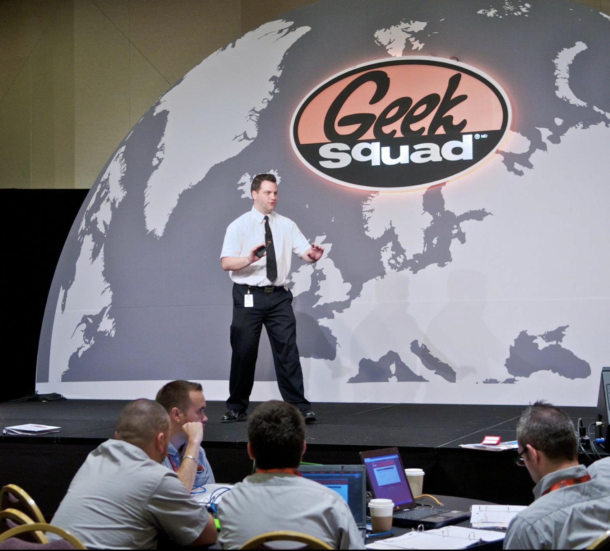

Security-Minded Operations
Cybersecurity, governance, identity, access, and incident response shaped by production realities instead of theory.
IT, cybersecurity, software, cloud & AI leadership
I come from IT and cybersecurity, and the work I do best sits in the overlap: secure operations, software delivery, cloud platforms, business systems, and practical AI that survives real constraints.
Leadership focus
Cybersecurity, governance, identity, access, and incident response shaped by production realities instead of theory.
Development, DevOps, QA, database operations, infrastructure, and cloud teams working toward stable business outcomes.
Agents, workflows, integrations, and AI-assisted work used where they reduce friction, increase capacity, and survive messy systems.
Recent work
I come from IT and cybersecurity, and the last several years have pushed that work into a wider operating model: software development, cloud platforms, DevOps, QA, data and database operations, agentic AI, integrations, governance, people, and business pressure.
Operating model
Recent roles have expanded my scope across software, infrastructure, security, cloud/platform operations, business systems, and delivery governance. The hard problems are rarely contained inside one department.
Practical AI
I use AI where it creates leverage, not theatre: development, testing, documentation, analysis, operational workflows, agentic experiments, and integrations that connect to real business systems.
Production systems
Leading delivery in environments where speed, quality, technical debt, uptime, cost, and security all compete for attention.
Cloud platforms
Azure-based operations, monitoring, identity controls, WAF/CDN/security tooling, data platforms, and scalable infrastructure.
Business systems
Work across high-volume e-commerce and logistics platforms where business rules, integrations, data, and operations are tightly connected.
Selected work
These threads show the shape of the work: scaling services, building secure systems, stabilizing hard situations, and connecting modern software, platform, AI-enabled workflows, and business operations.
Cloud security operations
Designed, built, and supported Canada's first cloud-based multi-site CCTV and access control system approved by Health Canada for the production and processing of controlled substances.

National scale
Worked with Geek Squad in Canada from its inception, helping develop it into a national brand across 247 locations over a ten-year period.

Immersive technology
In 2016, helped launch the first publicly available holographic and AR room, giving users tablet-based control of holographic and 360-degree VR experiences.
Response and resilience
Helping companies respond to, recover from, and prevent cybersecurity incidents while improving the systems and decisions that determine what happens next.
Agentic AI
Building and testing AI-assisted workflows that support development, documentation, analysis, testing, process improvement, and business operations without treating AI like a magic layer.
Software and platform leadership
Leading across software development, DevOps, QA, database operations, infrastructure, cybersecurity, and cloud platforms in complex e-commerce and logistics environments.
Technical breadth
The useful work is usually between disciplines: architecture, delivery, operations, security, data, AI-enabled workflows, and the business systems wrapped around them.
Cybersecurity, incident response, ISO 27001, NIST, PCI DSS, SOC 2, GDPR, identity, access, risk, and compliance.
Development leadership, architecture tradeoffs, QA, release practices, DevOps, technical debt, and production stability.
Azure cloud environments, infrastructure, sysadmin leadership, monitoring, WAF/CDN/security tooling, uptime, resilience, and cost.
SQL Server and database operations, business systems, marketplace and freight workflows, AI-assisted work, and agentic experiments.
Career narrative
Over the last 20+ years, I have held technology leadership roles in startups and Fortune 50 companies. The path started in hands-on IT and cybersecurity, then expanded into broader technology leadership: software delivery, DevOps, QA, database operations, cloud infrastructure, AI-enabled workflows, and agentic systems.
That combination has made me especially useful in environments where uptime, cost, security, quality, and delivery all matter. I am comfortable moving between strategy, architecture, implementation detail, and hands-on troubleshooting when the situation calls for it.

About
My career started in hands-on service and support, scaled through national operations, moved into high-security cloud systems and cybersecurity, and has since expanded into broader technology leadership.
The work is rarely just IT, just software, or just security. It is the overlap: cloud platforms, production systems, software delivery, databases, AI-enabled workflows, governance, people, and business pressure.
When I am not behind a keyboard, you will probably find me hopping on a flight to explore a new city. I believe in traveling and exploring new cultures as often as you can. It is better to see something once than hear about it a thousand times.
Beyond work


Contact
From time to time I do speaking engagements. Reach out if you are interested in practical technology leadership across security, cloud, infrastructure, software delivery, agentic AI, or operational systems.